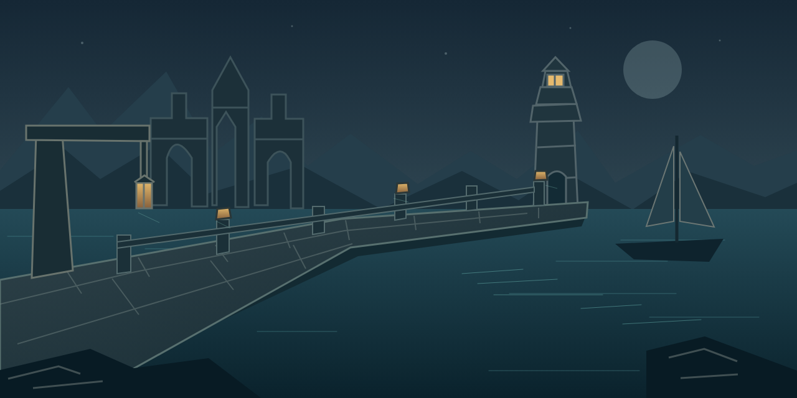
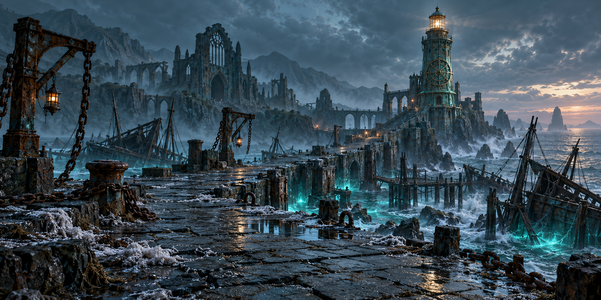
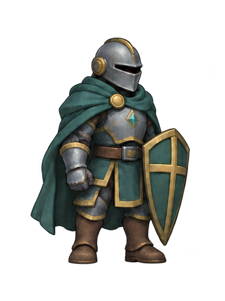
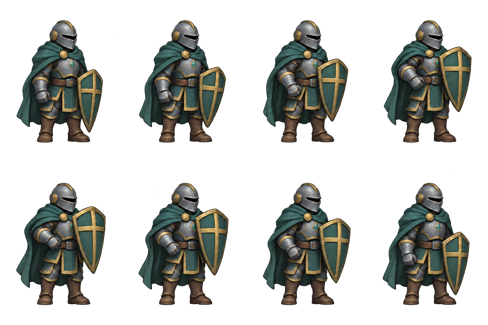

潮港石桥与邮铃 · 格式试作
这是独立美术对照页，未替换正式远征场景。SVG与候选PNG来自同一画面、同一尺寸；原港口绘制背景仅作风格参考，不能将两种画面的体积差当作同画质收益。
原生SVG场景 · 简化轮廓与分层色彩
同画面PNG · 按1280×640栅格化 原生SVG邮铃 · 检查小尺寸轮廓与透明边缘同画面PNG邮铃 · 96×96
原生SVG邮铃 · 检查小尺寸轮廓与透明边缘同画面PNG邮铃 · 96×96
现有港口参考 · 绘制细节与简化矢量候选不同，保留原资产守卫举盾 · 八姿态编码试作
先生成八个不同姿态，再修整透明背景并编码为840毫秒循环。不是单张静态图的重复，也不是直接生成GIF。此处只预览举盾动作，不表示实际接触、免伤或伤害，未替换正式战斗。参考骑士包尚未取得，风格对照仍待完成。

GIF仅支持二值透明；PNG精灵表保留半透明边缘。正式游戏仍沿原SVG与事件播放，GIF不能被当作精确可寻帧的战报。下载8帧GIF · 下载PNG精灵表
查看原始PNG精灵表

对照边界
候选未接入正式战场。文件体积、传输、解码、帧间隔和390px模拟结果分别记录，不能以单个计时推断真机或所有SVG。此页没有战斗结算、奖励或存档操作。SVG/PNG场景保持静态，GIF只在明确点击后预览，减少动态时禁用播放并显示静态帧。